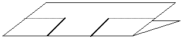
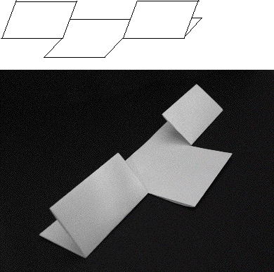

Now fold over the two end pieces made by the cuts; folding against a ruler guarantees a straight crease.
Fold both ways to insure a good crease and then unfold so the paper sheet lays flat.
|  |
| Fold on the dotted lines. |
|  |
| The two end pieces folded over. |
Return to A. The Cantor middle thirds set.